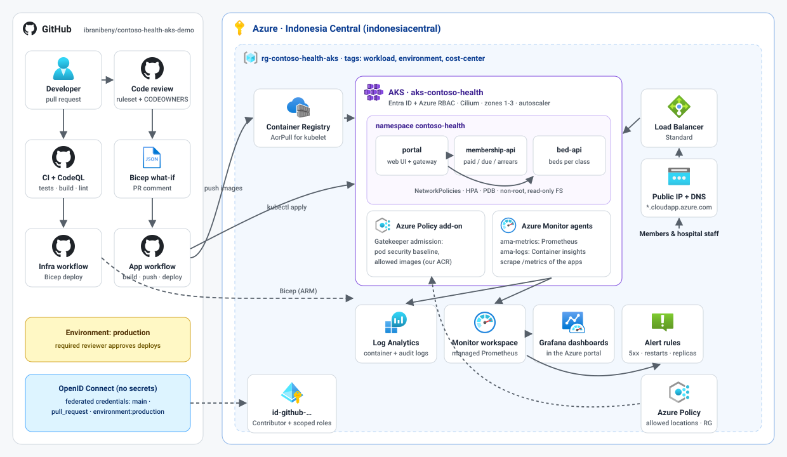
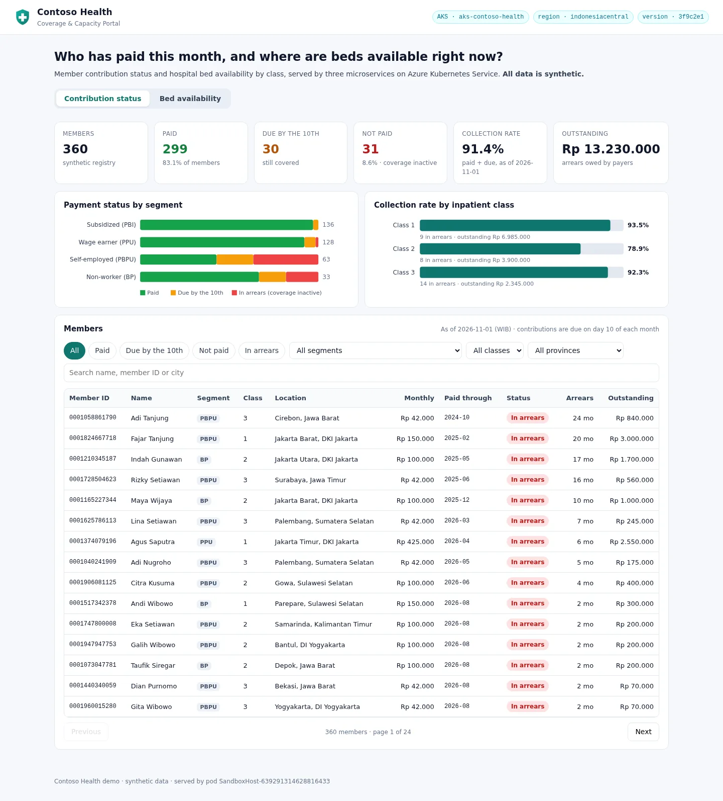

Azure Kubernetes Service · GitHub Actions · Indonesia Central
Contoso Health on AKS
A complete, click-by-click demo: a health-insurance app that shows who has paid their contribution and who has not, and how many hospital beds are free in each class, deployed to AKS with Bicep and GitHub Actions, observed with Azure Monitor and governed with Azure Policy. Every step has a narrated video and the whole demo is also one video. Steps 2 to 4 were recorded in the Azure portal and GitHub; steps 1 and 5 to 9 show the real automated run (public GitHub pages, the live app and output the pipelines read back from Azure); clean-up was not run.

Three outcomes, shown live#
One Bicep template, one approval
Pull requests preview changes with what-if; merges deploy through a gated GitHub environment. No secrets anywhere.
MonitoringMetrics, logs and alerts on day one
Managed Prometheus, Container insights, Grafana dashboards in the portal and PromQL alerts defined in code.
GovernanceGuardrails that say no
OIDC with least privilege, branch rulesets and approvals, Azure Policy at the resource and the pod level.
The guide#
Ten steps, about two hours end to end including waiting for Azure. Each step has a narrated video, numbered instructions for the Azure portal and GitHub, screenshots from the recorded run, and a short explanation of why it works that way.
Get the code
Create your copy of the repository from the template and tour the code.
02Prepare the subscription
Check resource providers and quota, then create the tagged resource group in Indonesia Central.
03Create the deployment identity
Create a managed identity, trust GitHub with federated credentials and grant least-privilege roles.
04Connect GitHub to Azure
Create the production environment with a required reviewer, add repository variables and protect main with a ruleset.
05Provision with Bicep
Run the Bicep workflow, approve the production deployment and inspect the resources it creates.
06Build and deploy the app
Approve the app rollout, open Contoso Health and see the workloads in the Azure portal.
07Ship a change with code review
Change the app through a pull request with checks and review, then preview an infrastructure change with what-if.
08Monitor the platform
Use Container insights, Log Analytics, managed Prometheus, Grafana dashboards and alerts for the cluster and the app.
09Prove the guardrails
Check Azure Policy compliance, get a non-compliant pod and an out-of-region resource denied, and audit changes.
10Clean up
Delete the resource group and tidy up the repository settings.
The app#
Three Node.js services with synthetic data for 360 members and 22 hospitals. Contribution rules follow a typical national health-insurance scheme: monthly contributions due on the 10th, three inpatient classes, and inactive coverage while a member is in arrears.


What you need#
- An Azure subscription where you can create resource groups and assign roles (Owner, or Contributor plus Role Based Access Control Administrator).
- A GitHub account. Copilot code review in step 7 is optional.
- Quota for 16 vCPUs of the DDSv5 family in Indonesia Central (step 2).
- No local tools: everything is done in the Azure portal and GitHub in the browser.
Two Standard_D4ds_v5 nodes, a Standard load balancer and public IP, a Standard container registry and monitoring ingestion are billed while the demo runs. Stop the cluster between sessions and delete the resource group when you are done (step 10). Use the Azure pricing calculator for your own estimate.